Data publicării: 14.10.2017
Autor articol: Mircea Vaida
1. Securitatea ADN
1.1 Noțiuni de biologie moleculară
ADN, acidul dezoxirobonucleic, este o moleculă complexă care conține informația necesară unei celule pentru a sitetiza proteine. ADN-ul este un acid nucleic dublu spiralat care conține și transmite informația genetică în mecanismul ereditar al tuturor organismelor vii, cu excepția câtorva viruși care nu au decât ARN. ADN-ul este organizat în cromozomi și, la toate organismele în afară de bacterii, se gasește doar în nucleul celulei.
ADN-ul este o polinuctleotidă, adică un compun în structura căruia se repetă un set limitat de macromolecule numite nucleotide. Nucleotida, ca unitate de bază a ADN-unului, este o macromoleculă organiză compusă dintr-un carbohidrat, mai exact o monozaharidă, de tipul pentoză, o bază azotată heterociclică de tipul piramidinei sau o variantă a acesteia condensată cu inelul imidazolic numită purină și un rest de acid fosforic, adică un grup fosfat. Două dintre bazele heterociclice azotate ale ADN-ului sunt purinice (Adenina și Guanina) iar alte două sunt piramidinice(Citozina și Timina). Alfabetul ADN constă în inițialele acestor elemente, {A,C;G,T}. În cazul ARN locul lui T este luat de U (Uracil).
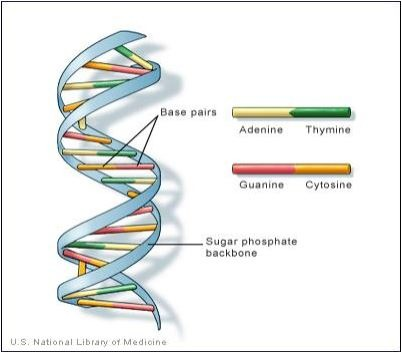
Dacă vom numi polimerul folosind pentru nucleotide inițialele acestora, obținem astfel o înșiruire care, prin grupări de câte trei litere (codoni), poate forma niște așa-zise “cuvinte”. Fiecărui codon îi corespunde, conform unui cod universal care există în lumea vie și care este numit codul genetic, un anumit aminoacid dintre cei douăzeci de aminoacizi principali ce compun proteinele. Structura primară a ADN-ului împreună cu cele patru tipuri de componente diferite, este cea care permite stocarea codificată a informației genetice subtile referitoare la un anume organism, precum într-o carte, în care literele sunt înlocuite cu cele patru tipuri diferite de nucleotide.
Codul genetic, care a început să fie descifrat la începutul anilor ’60, este o funcție ce atribuie fiecărui grup de trei nucleotide (codon) dintr-un fragment de ADN (genă) un aminoacid esențial ce va intra în structura unei proteine.
| Primul nucleotid | Al doilea nucleotid | Ultimul nucleotid | |||
| U | C | A | G | ||
| U | Fenilanină | Serină | Tirozină | Cisteină | U |
| U | Fenilanină | Serină | Tirozină | Cisteină | C |
| U | Leucină | Serină | STOP | STOP | A |
| U | Leucină | Serină | STOP | Triptofan | G |
| C | Leucină | Prolină | Histidină | Arginină | U |
| C | Leucină | Prolină | Histidină | Arginină | C |
| C | Leucină | Prolină | Glicină | Arginină | A |
| C | Leucină | Prolină | Glicină | Arginină | G |
| A | Izoleucină | Treonină | Asparagină | Serină | U |
| A | Izoleucină | Treonină | Asparagină | Serină | C |
| A | Izoleucină | Treonină | Lizină | Arginină | A |
| A | Metionină | Treonină | Lizină | Arginină | G |
| G | Valină | Alanină | Acid Aspartic | Acid glutamic | U |
| G | Valină | Alanină | Acid Aspartic | Acid glutamic | C |
| G | Valină | Alanină | Glutamină | Acid glutamic | A |
| G | Valină | Alanină | Glutamină | Acid glutamic | G |
| AMINOACID CODIFICAT | |||||
Tabel 1: Codul genetic
Foarte important este faptul că acest cod genetic s-a menținut aproape neschimbat în cursul evoluției și, cu mici excepții, este același la toate organismele, indiferent de gradul lor de complexitate (bacterii, plante, vertebrate, om), motiv pentru care se consideră că el este, pe bună dreptate, un cod universal. Alte proprietăți uluitoare ale sale decurg din modul în care se realizează citirea informației. Se folosește un așa-zis cod-triplet pentru că un codon se formează, deloc întâmplător, prin gruparea a câte trei nucleotide. Acest lucru este explicabil matematic, deoarece gruparea pe câte două nucleotide ar genera doar 16 combinații, ceea ce este mai puțin decât numărul aminoacizilor principali care sunt sintetizați de către organism (20). Pe de altă parte, combinațiile de câte 3 dau naștere la 64 de combinații, deci mai mult decât necesarul de 20, iar acest lucru permite ca unii aminoacizi să poată fi codificați de mai mulți codoni diferiți, ceea ce face ca acest cod să fie un cod degenerat. De exemplu, serina, leucina și arginina sunt codificate fiecare de câte 6 codoni diferiți. Unii codoni funcționează ca niște comutatoare de tip START sau STOP, fiind veritabile “semne de punctuație”. De exemplu, codonul corespunzător tripletului AUG din ARN-ul de transcripție, triplet care este asociat cu metionina, are rol de codon START și determină începerea procesului de citire a informației în timpul translației. Codonii corespunzători tripletelor UAA, UGA și UAG sunt codoni STOP și întalnirea lor în seria de nucleotide determină oprirea translației. Odată declanșată citirea informației respective ea se va face fără pauze (codonii fiind situați unii lângă alții) și fără ca nucleotidele care provin din doi codoni învecinați să se suprapună.
Această particularitate poate însă genera și erori grave: în cazul în care punctul de începere a citirii se decalează, nucleotidele se vor grupa în codoni total diferiți și va rezulta, prin urmare, o “traducere” incorectă.
1.2 Steganografia ADN
În timpul celui de-al II-lea război mondial, germanii au folosit micropunctele (microdots) pentru a ascunde informația într-un plan. Constând într-o fotografie a unei pagini tipărite, micșorată foarte mult, un micropunct putea să fie lipit deasupra unui punct de la capătul unei propoziții, într-o depeșă inocentă trimisă între un spion și personalul cartierului general. Acum, este posibilă codarea unui mesaj într-o secvență ADN, camuflarea lui printre un număr foarte mare de molecule similare și limitarea mostrei la o suprafață de dimensiunile unui micropunct.
Folosirea moleculelor ADN pentru a ascunde mesaje secrete a fost ideea Vivianei Rișca de la liceul Paul D. Schreiber din Port Washington, New York, care a câștigat marele premiu din cadrul concursului Intel Science Talent Search numit si “Junior Nobel Prize”. Viviana Rișca a colaborat cu Carter Bancroft și Catherine Taylor Clelland de la Școala de Medicină Mount Sinai din New York pentru a demonstra fezabilitatea modelului. În studii anterioare, Bancroft și colegii săi au arătat modul în care moleculele de ADN pot fi folosite pentru a aduna numere binare.
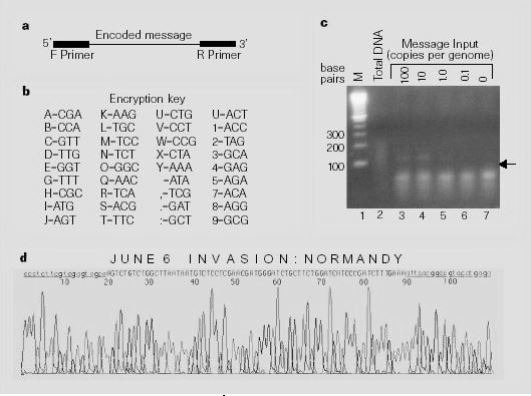
Aceștia au folosit o cheie de criptare pentru a coda mesajul “JUNE6_INVASION:NORMANDY” ca o secvență de 69 baze și au sintetizat următoarea secvență ADN:
AGTCTGTCTGGCTTAATAATGTCTCCTCGAACGATGGGATCTGCTTCTGGATCATCCCGATCTTTGAA.
Mesajul a fost încadrat între două unități de oligonucleotide (primers) constând în 20 baze fiecare, cunoscute doar de către expeditor și de destinatarul vizat:
TCCCTCTTCGTCGAGTAGCA și complementul lui TCTCATGTACGGCCGTGAAT.
Lungimea totală a unei singure molecule a fost de 109 baze. Câteva copii ale acestei molecule au fost amestecate cu un număr foarte mare de frangmente similare de ADN uman. Doar destinatarul care cunoștea ambele secvențe primers putea să extragă mesajul, folosind PCR pentru a izola și face copii ale mesajului care conținea secvența ADN. Apoi, urma doar determinarea secvenței de nucleotide în șirul relevant și decodarea mesajului. În contrast, un intrus ar trebui să își asume sarcina virtual imposibilă de a testa 420 secvențe posibile de primer pentru a identifica perechea corectă.
Rișca atrage atenția asupra faptului că molecula ADN este o moleculă foarte stabilă în condiții normale și PCR este o tehnică de analiză foarte sensibilă, astfel încât mesajul ADN poate fi ascuns aproape oriunde.
În experimentul lor, cercetătorii au picurat o cantitate mică de soluție ce conținea ADN pe un mic punct imprimat pe o hartie de filtru. Apoi, au decupat punctul, l-au lipit peste un punct dintr-o scrisoare tipărită și au expediat scrisoarea. Destinatarul a reperat punctul, a efectuat analiza și a decodat cu succes mesajul.
1.3 Criptografia ADN
Computația biomoleculară este o provocare la adresa abordărilor teoretice și tehnologice tradiționale . Ideea unui sistem molecular care poate executa calcule nu este nouă și părea mult mai naturală în epoca dinaintea tranzistoarelor. Majoritatea oamenilor de știință din domeniu cunosc discuțiile de la sfârșitul anilor 1950 ale lui von Neumann despre sistemele de auto-reproducere automata, multe dintre ele fiind expuse în termeni de biologie moleculară. În 1994 Adleman a demonstrat că uneltele din laboratorul de biologie moleculară pot fi folosite pentru a programa calcule cu ADN in vitro. Uriașa capacitate de stocare a informației pe care o are ADN-ul (câteva grame sunt suficiente pentru a salva întreaga informație sau date existente în lume ) și cantitatea mică de energie disipată de procesarea ADN a condus la explozia interesului în computația ADN paralelă.
Într-unul din articolele sale, Tatiana Hodorogea, fosta doctoranda la Universitatea Tehnică din Cluj-Napoca sub îndrumarea domnului profesor Mircea Vaida propunea un algoritm de criptare ADN bazat pe analize medicale ale sângelui. 8
Pornind de la ideea că alfabetul ADN este format din 4 litere, un program va genera o secvență de nucleotide S, de lungime L, dându-se un număr n, dintr-o combinație aleatoare de litere ADN: L=4n (2)
Apoi, se va asocia un mineral specific M cu secvența corespunzătoare de nucleotide S. Cum analizele de sânge sunt unice pentru fiecare persoană, se poate asocia un mineral M (de exemplu calciul), bazat pe nivelul de concentrație CL, cu noua secvență de nucleotide S1. S1 este derivată din secvența de nucleotide S, bazându-se pe CL unică, având valoarea V. Această valoare reprezintă un nivel al concentrației unic al unui anume mineral M.
= x.y1y2 (3) , unde x.y1y2 este numărul ce reprezintă valoarea V
=> CL=x.y1y2 (4)
La următorul pas, S este asociat lui M pe baza nivelului concentrației CL. Noua secvență de nucleotide S1 rezultată, de lungime L1 va constitui secvența unică primer a unui individ.
S1=L1
L1=x*S+ (L-(y1+y2)) (5)
=> S1=x*S+ (L-(y1+y2)) (6)
Această secvență de nucleotide S1, bazată pe analizele medicale ale unei anumite persoane, va constitui secvența unică primer. Astfel, secvența de ADN purtătoare de date care aparține unei persoane va fi marginită de secvențe primer unice. Asocierea se va face în așa fel încât din cele mai recente rezultate ale analizei de sânge, o nouă secvență unică primer S1 de lungime L1 va fi generată. Fiecare analiză de sânge unică va servi ca bază pentru o cheie publică. Rezultatele medicale nu vor fi de folos persoanelor neautorizate iar pentru un intrus se va dovedi deosebit de dificil citirea și detectarea secvenței ADN care conține istoricul medical al unei persoane, fără a cunoaște secvențele primer care sunt specifice și unice acelui individ.
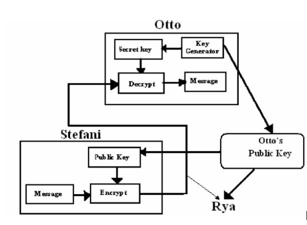
În ceea ce privește criptarea, după ce datele utile au fost codate ADN, ele vor fi încadrate între două secvențe de tip primer și amestecate printre alte secvențe ADN.
O altă abordare posibilă a criptografiei ADN o încadrează în sistemele criptografice cu chei publice. Procesul de criptare și decriptare implică mai multe etape:
Thomas generează o cheie secretă, de o anumită lungime, sub forma unui șir de octeți care reprezintă literele alfabetului ADN, într-o ordine aleatoare.
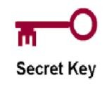
2. Criptează mesajul secret folosind cheia secretă.
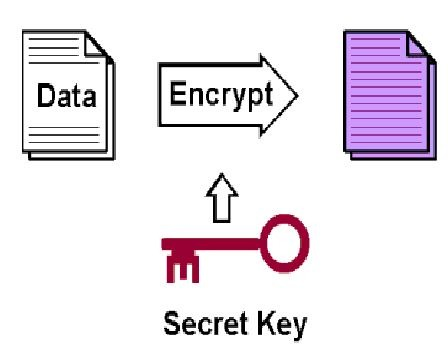
3. Transmite cheia secretă cu persoanele cărora le este destinat mesajul.
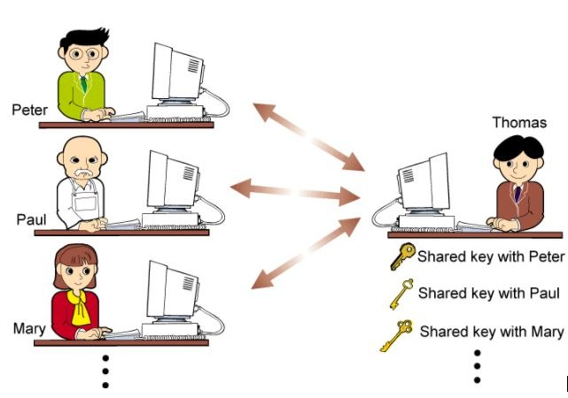
4. Trimite mesajul criptat către cei care dețin cheia lui privată.
5. Destinatarii folosesc cheia privată primită pentru a decripta mesajul. Orice intrus care va încerca decriptarea mesajului nu o va putea face în lipsa cheii.
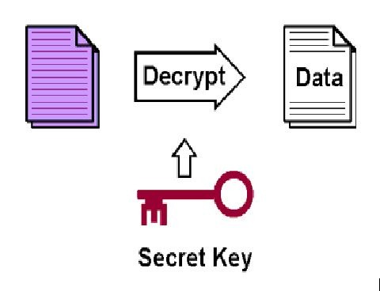
Pentru un mai mare grad de securitate se folosește o dublă criptare. Prima din ele încadrează cifrul în categoria cifrurilor de substituție, iar cea de-a doua în categoria cifrurilor de tip one-time pad, cifruri considerate perfect sigure.
Generarea cheii
În criprografie, OTP (one-time-pad) este un algoritm de criptare în care textul în clar este combinat cu o cheie aleatoare secretă, sau un pad de o lungime egală cu textul în clar și care este folosit o singură dată. Algoritmul a fost inventat în 1917 și patentat câtiva ani mai târziu. În cazul în care cheia este cu adevărat aleatoare, nu mai este refolosită și păstrată secretă, one-time-pad asigură o siguranță perfectă.
În acest scop, s-a folosit clasa SecureRandom, oferită de mediul de programare Java, care pune la dispoziție un puternic generator de numere pseudo-aleatoare.
Deoarece criptarea folosind această cheie face parte din al 2-lea pas de criptare, lungimea cheii trebuie să fie egală cu lungimea textului rezultat în urma aplicării cifrului de substituție, mai exact de 3 ori mai mare decât textul secret care se dorește criptat.
Clasa responsabilă cu generarea cheii secrete, DNAKeyGenerator, care extinde clasa KeyGeneratorSpi, prin metoda de tip engine engineGenerateKey() definește modul în care este construită această cheie. În fig. 19 este reprezentată o diagramă UML care expune legătura dintre clasele care conduc la construcția unei chei private necesară acestui algoritm. Pentru generarea diagramelor UML s-a folosit un plug-in pentru Eclipse numit eUML2, dezvoltat de către compania Soyatec. eUML2 este un generator de diagrame UML destinat developerilor de Java care folosesc Eclipse. Acesta se găsește în variantă Free sau Studio Edition. Pentru generarea diagramelor din această lucrare s-a utilizat versiunea Free Edition.
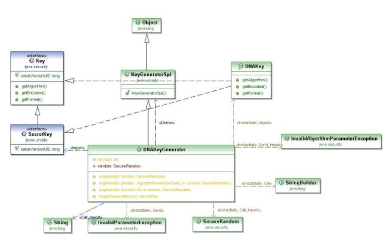
Pornind de la principiul one-time-pad și de la componența alfabetului ADN rezultă că și cheia va trebui sa fie o secvență aleatoare, unică, de litere ale alfabetului ADN. Lungimea acestei chei este variabilă, condiția fiind să fie un multiplu de 3, putând fi aleasă de către utilizator. De fapt, cheia ar trebui să fie un multiplu de 24: un multiplu de 3 din motivele enumerate mai sus și un multiplu de 8 deoarece un octet este format din 8 biți iar în final cheia va trebui transformată într-un șir de tip byte. Deoarece dimensiunea cheii este specificată în număr de caractere, și un caracter ocupă un octet, este suficient să impunem condiția ca lungimea cheii să fie un multiplu de 3. În cazul în care dimensiunea aleasă a cheii nu este multiplu de 3, se va genera o excepție.
Pentru a putea genera o astfel de cheie, se va construi ma întâi un șir de numere întregi aleatoare, urmând ca fiecărui număr să-i fie asociată o literă a alfabetului ADN astfel:
protected SecretKey engineGenerateKey(){
if (this.random == null) {
this.random = new SecureRandom();
}
String key=””; //cheia formata din alfabet adn
int b[]=new int[this.keySize]; //construiesc un șir de numere între 0 și 3
for (int i=0;i<this.keySize;i++) {
b[i]=random.nextInt((4));
switch (b[i]) {
case 0: key+=’a’; break; //asociez ficărui număr o literă
case 1: key+=’c’; break;
case 2: key+=’g’; break;
case 3: key+=’t’; break;
}
;}
byte keyBytes[]=key.getBytes();
DNAKey myKey=new DNAKey(keyBytes);
return myKey;
}
Deoarece cheia trebuie transmisă sub forma unui șir de octeți, după ce s-a obținut un String prin concatenarea literelor alfabetului ADN într-o ordine aleatoare, acesta va fi transformat în șirul de octeți prin metoda getBytes().
Criptarea
După cum s-a evidențiat deja, acest algoritm de criptare combină doi algoritmi clasici: cel de substituție și one-time-pad.
Deoarece cheia trebuie sa fie egală cu dimensiunea textului în clar înmulțită cu 3, în cazul textelor foarte mari care se doresc criptate, se poate ajunge la dimensiuni uriașe ale cheilor. În acest scop, s-a ales un cifru de tip bloc. Textul în clar va fi împărțit în blocuri egale cu lungimea cheii împărțită la 3, urmând ca asupra fiecărui bloc să fie aplicată cheia secretă în vederea criptării. Algoritmul are în vedere și probabilitatea ca ultimul bloc să aibă o dimensiune mai mică decât celelalte și îl prelucrează cu o cheie de dimensiuni corespunzătoare acestuia.
Fiind vorba de un cifru bloc, modul de cifrare ales a fost ECB (Electronic Codebook), prin care un bloc de text în clar se transformă într-un bloc de text cifrat. Deoarece același bloc de text în clar se cifrează întotdeauna în același bloc de text cifrat, teoretic este posibilă crearea unei cărți de coduri în care să se facă asocierea text clar-text cifrat. Totuși, trebuie avut în vedere că la fiecare nouă criptare, există o altă cheie, lucru care se traduce prin necesitatea existenței unui codebook pentru fiecare cheie de criptare.
Pentru aplicarea cifrului de substituție s-a folosit un obiect de tip HashMap. HashMap este o clasă din libraria java.util, care implementează interfața Map. Aceste obiecte asociază valori unor chei unice. Asocierea dintre caracterele textului în clar și secvențele de câte 3 nucleotide s-a făcut astfel:
final Map<Character,String> convADN=new HashMap<Character,String>(){
{
put(‘a’, “cga”); put(‘b’, “cca”);
put(‘c’, “gtt”); put(‘d’, “ttg”);
put(‘e’, “ggc”); put(‘f’, “ggt”);
put(‘g’, “ttt”); put(‘h’, “cgc”);
put(‘i’, “atg”); put(‘j’, “agt”);
put(‘k’, “aag”); put(‘l’, “tgc”);
put(‘m’, “tcc”); put(‘n’, “tct”);
put(‘o’, “gga”); put(‘p’, “gtg”);
put(‘q’, “aac”); put(‘r’, “tca”);
put(‘s’, “acg”); put(‘t’, “ttc”);
put(‘u’, “ctg”); put(‘v’, “cct”);
put(‘w’, “ccg”); put(‘x’, “cta”);
put(‘y’, “aaa”); put(‘z’, “ctt”);
put(‘_’, “ata”); put(‘,’, “tcg”);
put(‘.’, “gat”); put(‘:’, “gct”);
put(‘0’, “act”); put(‘1’, “acc”);
put(‘2’, “tag”); put(‘3’, “gac”);
put(‘4’, “gag”); put(‘5’, “aga”);
put(‘6’, “tta”); put(‘7’, “aca”);
put(‘8’, “agg”); put(‘9’, “gcg”);
put (‘ ‘,”ccc”);
}
};
Trebuie notat faptul că acest cifru nu prelucrează majusculele. Înainte de aplicarea transformării propriu-zise, toate literele sunt transformate în minuscule.
După aplicarea cifrului de substituție va rezulta un șir de caractere ale alfabetului ADN. Acesta va fi transformat într-un șir de octeți în vederea aplicării funcției XOR între aceștia și octeții cheii de criptare. Rezultatul reprezintă textul cifrat.
Ci=P1i^Ki (7)
unde Ci=octetul i din textul cifrat, P1i=octetul i din textul scris în limbaj ADN, Ki=octetul i din cheia secretă.
Decriptarea
Pentru decriptare, destinatarul va avea nevoie de două elemente foarte importante: regula de mapare în cazul cifrului de substituție și cheia de criptare.
Regula de mapare nu reprezintă o problemă deoarece se presupune că destinatarul are implementată pe mașina respectivă o versiune a acestui cifru, versiune care conține regulile de mapare inversă.
Mesajul recepționat este supus unei operații SAU-EXCLUSIV împreună cu cheia secretă primită în prealabil. În urma operației va rezulta un mesaj scris în alfabetul ADN.
Mesajul recepționat se împarte în șiruri de câte 3 caractere cărora li se efectuează conversia inversă, din alfabetul ADN în alfabetul original:
P1i=Ci^Ki (8)
unde Ci=octetul i din textul cifrat, P1i=octetul i din textul scris în limbaj ADN, Ki=octetul i din cheia secretă.
Mesajul în limbaj ADN este apoi supus substituției inverse, rezultând în final mesajul original, textul în clar.
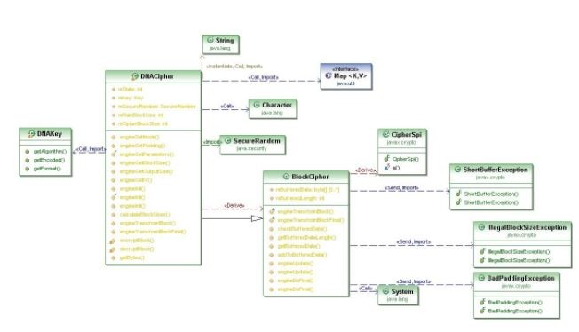
1.4 Implementarea și integrarea cifrului
Întregul cod a fost scris în limbajul Java. JCE (Java Cryptography Extension) și JCA (Java Cryptografy Archiecture) care au cunoscut evolutii odata cu noile variante Java SE, dar care pentru compatibilitate respecta mecanismul initial propus de Sun. Aceste module definesc modul în care se poate dezvolta și integra un nou algoritm de criptare.
Conform indicațiilor oferite de către Oracle/Sun, în documentul intitulat How To Implement a Provider for the Java Cryptography Extension 9 , identificăm următorii pași:
- Scrierea codului care implementează serviciile dorite
- Alegerea unui nume pentru Provider
- Scrierea clasei principale, “Master class”, derivată din clasa Provider
- Compilarea Codului
- Prepararea pentru testare
- Scrierea și compilarea programelor de test
- Rularea programelor de test
- Documentarea Providerului și a serviciilor suportate de acesta
În scopul respectării cerințelor s-a procedat astfel:
1. Scrierea codului care implementează serviciile dorite
În acest stadiu, Providerul CryptoDNA suportă doar algoritmul de criptare ADN. Pentru a realiza implementarea acestuia, s-au creat clase derivate din clasele SPI corespunzătoare, respectiv din clasele CipherSpi și KeyGeneratorSpi. Acestea au implementat metodele abstracte ale căror nume încep cu cuvântul “engine”. Pentru optimizarea codului, s-au construit și o altă clasă care manipulează blocurile, precum și alte metode ( encryptBlock, decryptBlock etc) care sunt mai apoi apelate în cadrul metodelor engine.
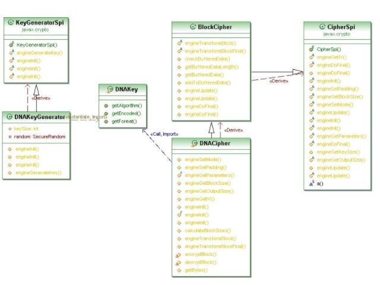
2. Alegerea unui nume pentru Provider
Numele ales a fost CryptoDNA. El va fi folosit de către aplicațiile clienților pentru a se referi la acesta.
3. Scrierea clasei principale, “Master class”, derivată din clasa Provider
Cel de-al 3-lea pas este cel în care este creată o clasă derivată din clasa java.security.Provider.
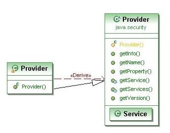
Această clasă derivată este finală iar constructorul apelează super, specificând numele Providerului ales la pasul 2 și informații legate de provider și algoritmul suportat:
super (“CryptoDNA”, 2.0, “DNA Cryptography Provider”);
De asemenea, pentru fiecare serviciu implementat de către provider, trebuie să existe o proprietate a cărei nume reprezintă tipul de serviciu, urmat de un punct și de numele algoritmului căruia îi este aplicat serviciul. Proprietatea trebuie să specifice numele complet al clasei care implementează serviciul:
put(“KeyGenerator.DNA”, “dnaPack1.DNAKeyGenerator”);
put(“Cipher.DNA”, “dnaPack1.DNACipher”);
În cazul Cipher, numele algoritmului poate reprezenta o transformare și poate fi compusă din numele algoritmului, un mod particular și o schema de padding (dacă este cazul).
4. Compilarea Codului
Codul a fost compilat, rezultând fișierele de tip *.class.
5. Prepararea pentru testare
La acest pas, pentru a putea efectua orice fel de teste, inclusiv pe mașina locală, este necesar un certificat de semnare a codului. Certificatul valid 5 ani util atât pentru testare cât și pentru producție.
Pentru a obține un astfel de certificat trebuie procedat astfel:
a. Se folosește keytool pentru a genera o pereche de chei.
keytool -genkey -alias <alias> -keyalg DSA -keysize 1024
-dname “cn=<Company Name>,ou=Java Software Code Signing,
o=Sun Microsystems Inc”
-keystore <keystore file name>
-storepass <keystore password>
Acestea se scriu pe o singură linie. Rezultatul va constitui o pereche de chei DSA (o cheie publică și cheia privată pereche) stocată în keystore-ul specificat. Daca locul de stocare (keystore) nu există, el va fi creat.
b. Folosind keytool, se va genera o cerere pentru semnarea de certificat
keytool -certreq -alias <alias> -sigalg DSA
-file <csr file name>
-keystore <keystore file name>
-storepass <keystore password>
Această comandă va genera un CSR (Certificate Signing Request), folosind formatul PKCS#1
c. Se trimit prin email CSR și informațiile de contact la adresa javasoft-cert-request@sun.com.
d. După primirea email-ului, JCE Code Signing Certification Authority va trimite un număr de cerere prin email. Acest număr va trebui introdus într-un formular (10) care se va trimite la următoarea adresă :
Oracle/Sun Microsystems, Inc.
International Trade Services/Export Compliance
Attn: Encryption Export
4120 Network Circle MS: USCA12-204
Santa Clara, CA 95054
U.S.A.
După primirea certificatului, Providerul se va include într-o arhivă de tip JAR care va fi mai apoi semnată cu unealta jarsigner care va include și acest certificat.
Providerul va fi adăugat în lista de Providere, editând fișierul java.security astfel încât ultimul provider din listă va fi Providerul CryptoDNA:
security.provider.11=dnaPack1.Provider
6. În scopul testării s-a construit o clasa numită testADN. În cadrul acesteia se va instanția un obiect de tip Cipher, se va genera o cheie folosind clasa KeyGenerator, ambele primind ca argument string-ul “DNA” care reprezintă numele algoritmului.
7. S-au rulat programele de test.
Deoarece în urma efectuării pașilor necesari obținerii unui certificat de la Sun s-a primit un răspuns negativ, motivând lipsa resurselor necesare urmăririi unui astfel proiect realizat de un student, am dezvoltat acest Provider folosind OpenJDK . OpenJDK este un Java Development Kit gratuit, bazat pe cod open source, realizat prin eforturile Sun Microsystems. El oferă toate facilitățile oferite de platforma Java, versiunea JDK 6.0, fără a impune restricții cu privire la folosirea Providerelor. Astfel, Providerul CryptoDNA a fost dezvoltat în OpenJDK, sub platforma Linux, distribuția Ubuntu 9.04.
S-au efectuat teste în scopul comparării timpului necesar criptării, respectiv decriptării în cazul diverselor cifruri, inclusiv folosind algoritmul de codare ADN. Secvența de test a fost:
TAACAGATTGATGATGCATGAAATGGGCCCATGAGTGGCTCCTAAAGCAGCTGCTTACAGATTGATGTGCATGAAATGGGGGGTGGCCAGGGGTGGGGGGTGAGACTGCAGAGAAAGGCAGGGCTGGTTCATAACAAGCTTTGTGCGTCCCAATATGACAGCTGAAGTTTTCCAGGGGCTGATGGTGAGCCAGTGAGGGTAAGTACACAGAACATCCTAGAGAAACCCTCATTCCTTAAAGATTAAAAATAAAGACTTGCTGTCTGTAAGGGATTGGATTATCCTATTTGAGAAATTCTGTTATCCAGAATGGCTTACCCCACAATGCTGAAAAGTGTGTACCGTAATCTCAAAGCAAGCTCCTCCTCAGACAGAGAAACACCAGCCGTCACAGGAAGCAAAGAAATTGGCTTCACTTTTAAGGTGAATCCAGAACCCAGATGTCAGAGCTCCAAGCACTTTGCTCTCAGCTCCACGCAGCTGCTTTAGGAGCCACTCATGAG
Testele s-au efectuat pe un sistem cu următoarele caracteristici:
Procesor Intel, OS: Ubuntu
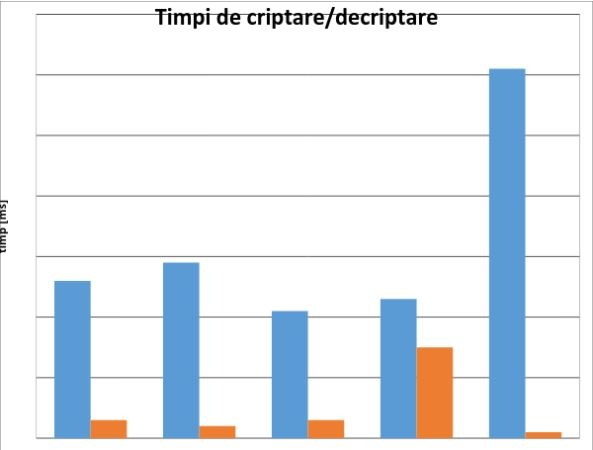
Se poate constata faptul că cifrul ADN necesită un timp relativ mic pentru criptare dar un timp foarte mare, comparativ cu ceilalți algoritmi, pentru decriptare. Dintre cele 5 cifruri, cel care necesită cel mai scurt timp pentru criptare este Blowfish, iar pentru decriptare AES.
1.5 Integrarea Providerului într-o aplicație bazata pe un mecanism clasic de securizare
Aplicația SmartCipher este dezvoltată folosind limbajul Java, în OpenJDK, sub platforma Linux, distribuția Ubuntu 9.04. Ea reprezintă o unealtă folositoare pentru comparația dintre rezultatul criptării în cazul diverselor cifruri.
Interfața a fost creată folosind plug-in-ul pentru Eclipse Java IDE Jigloo GUI Builder, dezvoltat de către Cloud Garden. În cazul de față s-a utilizat varianta pentru uz necomercial care este gratuită.
Interfața conține un TextArea în care utilizatorul poate introduce textul pe care dorește să-l cripteze. Următorul pas este selecția cifrului. Disponibile sunt 4 cifruri: Des, TripleDes, Blowfish și DNA dintre care se poate alege unul folosind butonul radio corespunzător.
În urma apăsării butonului “Cripteaza” se vor afișa în celelalte două chenare textul criptat, respectiv textul după decriptare, precum și duratele necesare criptării și decriptării.
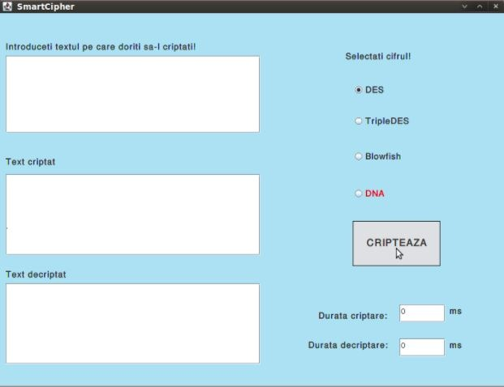
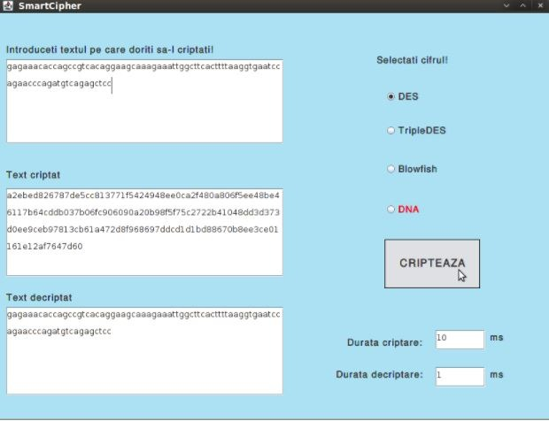
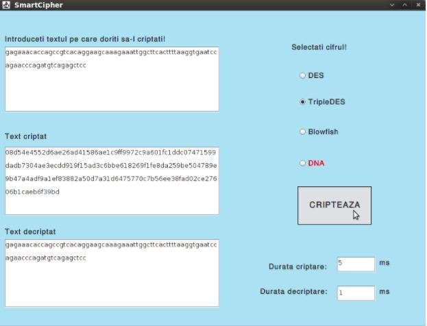
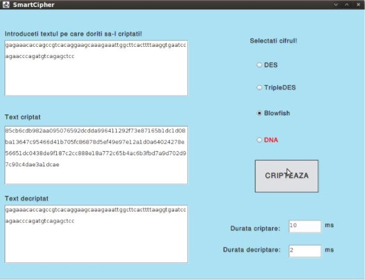
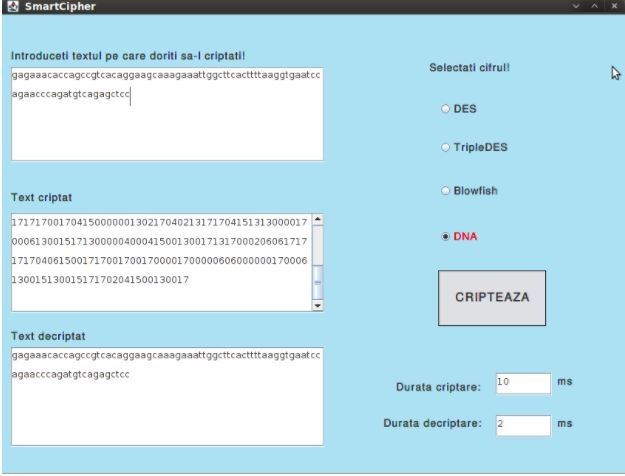
Se poate observa faptul că, datorită folosirii unei chei diferite la fiecare criptare, respectiv datorită mecanismul one-time-pad, rezultatul criptării va fi diferit de fiecare dată chiar dacă textul în clar rămâne neschimbat.
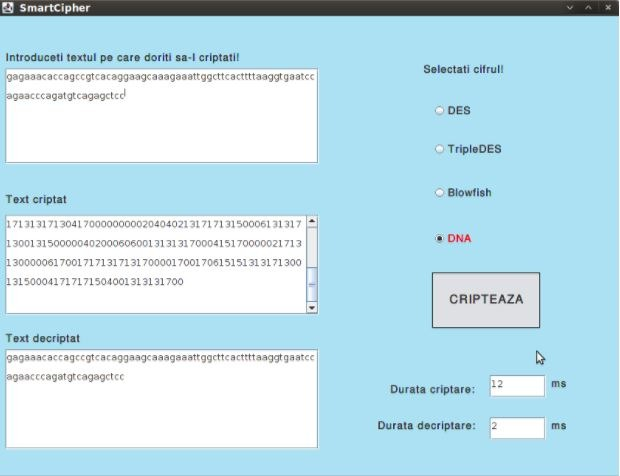
2. Concluzii si dezvoltări ulterioare
În practică, de cele mai multe ori, sunt folosiți, în combinație, atât algoritmii simetrici, cât și cei nesimetrici. Acest tip de criptare, este numit criptare hibridă,fiind foarte folosit datorită rapidității și protecției care sunt oferite în același timp.
Criptarea asimetrică are avantajul faptului că una dintre chei (cea de criptare) poate fi facută publică, fără a mai pune problema transmiterii unei singure chei care trebuie să rămână secretă. Aceasta cheie de criptare poate fi transmisă oricui, în timp ce cheia de decriptare este deținuta de cel ce a criptat, fiind denumită cheie privata. Un alt avantaj al cheilor asimetrice asigurearea identității. Dacă o persoana X criptează un mesaj I cu cheia lui privată, îl transmite unei persoane Y și aceasta îl poate decripta cu cheia publica primită, putem spune că Y are certitudinea că mesajul provine de la X.
Criptarea simetrică are avantajul vitezei, fiind foarte utilă în cazul criptării fișierelor locale.
Combinând avantajele celor două tipuri de algoritmi, rapiditatea și protecția, propun un protocol de criptare hibridă care funcționează astfel:
Criptarea mesajului
- Generarea cheii simetrice K, folosind algoritmul ADN de criptare simetrică
Generearea perechii formată dintr-o cheie publică și una privată folosind algoritmul ADN de criptare asimetrică propus de către Tatiana Hodorogea și Mircea Florin Vaida în articolul “Blood Analysis as Biometric Selection of Public Keys ” 8
- Criptarea mesajului M cu cheia simetrică și obținerea mesajul M*
- Preluarea cheii publice
- Criptarea cheii simetrice cu cheia publica și obtinerea lui K*
- Transmiterea perechii {K*,M*}
Decriptarea mesajului
- Recepționarea mesajului {K*,M*} și separarea celor două câmpuri
- Decriptarea lui K* cu ajutorul cheii private proprii, pentru obținerea cheii K
- Decriptarea lui M* cu K pentru obținerea mesajului original M
In cadrul acestui raport s-a urmarit construirea unui nou algoritm de criptare, precum și evaluarea acestuia în comparație cu alți algoritmi similari. Încadrând acest algoritm în categoria algoritmilor simetrici, am putut face o comparație a timpului necesar criptării, respectiv decriptării, cu alți algoritmi simetrici precum DES, TripleDES, Blowfish și AES.
Cifrul face o prelucrare pe blocuri a textului în clar, fiecărui bloc fiindu-i aplicată o cheie secretă. O particularitate a acestui algoritm o reprezintă dubla criptare. Pentru a obține un cifru mai puternic s-au folosit doi algoritmi clasici de criptare: substituția și one-time-pad.
Pentru a putea implementa acest cifru s-au construit următoarele clase:
- BlockCipher – efectuează împărțirea informației în blocuri de o dimensiune prestabilită
- DNAKeyGenerator – generează o cheie alcătuită dintr-un șir de octeți aleatori folosind clasa SecureRandom, pe care apoi o traduce conform alfabetului ADN
- DNAKey – clasa care returnează cheia generată cu clasa DNAKeyGenerator
- DNACipher – aplică regulile de criptare, respectiv decriptare
- Provider – un “Master Class” care coordonează modul în care serviciile criptografice sunt văzute în interiorul acestui Provider de securitate
Prima prelucrare, respectiv prima criptare, transformă textul în clar într-un text tradus în limbaj ADN după următorul tabel:
| A – CGA | L – TGC | W – CCG | 3 – GAC |
| B – CCA | M – TCC | X – CTA | 4 – GAG |
| C – GTT | N – TCT | Y – AAA | 5 – AGA |
| D – TTG | O – GGA | Z – CTT | 6 – TTA |
| E – GGC | P – GTG | _ – ATA | 7 – ACA |
| F – GGT | Q – AAC | , – TCG | 8 – AGG |
| G – TTT | R – TCA | . – GAT | 9 – GCG |
| H – CGC | S – ACG | : – GCT | space – CCC |
| I – ATG | T – TTC | 0 – ACT | |
| J – AGT | U – CTG | 1 – ACC | |
| K – AAG | V – CCT | 2 – TAG |
Tabel 2: Tabel de conversie ADN
De menționat este faptul că prelucrările se fac doar pe minuscule, majusculele fiind introduse în tabel doar pentru o mai bună evidențiere a transformărilor.
Textul secret, acum tradus în limbaj ADN urmează să fie supus unei operații SAU-EXCLUSIV cu o cheie unică, și aceasta fiind formată dintr-o succesiune aleatoare de litere ale alfabetului ADN (a, c, g, t).
Decriptarea presupune o nouă operație SAU-EXCLUSIV între textul criptat și cheia secretă pe care doar destinatarul o are și o reconversie din limbaj ADN în limbajul în care a fost scris textul inițial.
Evoluția domeniului IT și necesitatea tot mai crescută a unor aplicații sigure conduc la apariția tot mai multor tehnici de garantare a securității. În prezent sunt folosite diverse modele clasice bazate preponderent pe algoritmi matematici complecși. Biotehnologiile, implicit metodele bazate pe informația ADN, reprezintă modele care pot constitui importante direcții în cercetare.
Acest algoritm poate fi optimizat având în vedere următoarele:
- În urma unui studiu aprofundat al structurii ADN se poate modifica algoritmul astfel încât să existe un grad cât mai apropiat de maxim de asemănare între acest model și modelul ADN-ului uman.
- Obținerea unui certificat de la SUN/Oracle pentru a o putea integra în JCE și a o putea folosi sub orice sistem de operare (Distribuțiile noi de Linux au integrat OpenJDK, neexistând o versiune care se poate folosi sub Windows).
- Folosirea acestui algoritm în cazul aplicațiilor medicale ce trebuie să asigure confidențialitate, respectiv în cazul schimbului de informații între medici și între medici și pacienți.
Odata cu dezvoltarea tehnologiilor, inclusiv a celor mobile, tari care erau relativ ramase in urma in ceea ce priveste cercetarea in domeniul securitatii investesc fonduri din ce in ce mai mari pentru a oferi produse sigure pe piata.
Uniunea Europeana are o strategie prin care impune ca toate produsele software dezvoltate pe piata comuna sa respecte standarde de securitate stabilite prin norme obligatorii.
3. Bibliografie
1. T. Băjenescu, M. Borda. Securitatea în informatică și telecomunicații. Cluj-Napoca : Dacia, 2001.
2. DotNetSlackers. An inside look at Symmetric Encryption. DotNetSlackers. http://dotnetslackers.com/articles/security/AnInsideLookAtSymmetricEncryption.aspx.
3. Lucks, Stefan. Attacking Triple Encryption. London : Springer-Verlag, 1998, Lecture Notes In Computer Science, Vol. 1372.
4. NIST. Specification for the Advanced Encryption Standart. Computer Security Resource Center. http://www.csrc.nist.gov/publications/fips/fips197/fips-197.pdf.
5. Description of a New Variable-Length Key, 64-Bit Block Cipher (Blowfish). Schneier, Bruce. s.l. : Springer-Verlag, 1994, Fast Software Encryption, Cambridge Security Workshop Proceedings (December 1993).
6. Savard, John. IDEA (International Data Encryption Algorithm). [Interactiv] http://www.quadibloc.com/crypto/co040302.htm.
7 Genetics Home Reference. [Interactiv] U.S. National Library of Medicine. http://ghr.nlm.nih.gov/handbook/basics/dna.
8. Tatiana Hodorogea, Mircea-Florin Vaida, BLOOD ANALYSIS AS BIOMETRIC SELECTION OF PUBLIC KEYS, 7 th International Carpathian Control Conference ICCC’2006, Ostrava – Beskydy, Czech Republic, May 29-31, 2006, pp. 675-678
9. How to Implement a Provider for the JavaTM Cryptography Extension. Sun Microsystems. http://download.oracle.com/otn_hosted_doc/jdeveloper/904preview/jdk14doc/docs/guide/security/jce/HowToImplAJCEProvider.html.
10. Microsystems, Sun. Developer Resources for Java Technology. Certification Form for CSPs. http://www.oracle.com/technetwork/es/java/javase/downloads/jce-7-download-432124.html.
11. A Brief History of Cryptography. Cypher Research Laboratories Pty. Ltd. http://www.cypher.com.au/crypto_history.htm.
12. Java Cryptography Architecture. Sun Microsystems. http://docs.oracle.com/javase/6/docs/technotes/guides/security/crypto/CryptoSpec.html.
13. Scott Oaks, Java Security (2nd Edition), O’Reilly & Associates, Inc, 2017
14. Ashish Gehani, Thomas LaBean, John Reif. DNA-Based Cryptography. s.l. : DIMACS Series in Discrete Mathematics and Theoretical Computer Science, 1999, Vol. 54.
15. DNA Alphabet. VSNS BioComputing Division. http://www.techfak.uni-bielefeld.de/bcd/Curric/PrwAli/node7.html#SECTION00071000000000000000.
16. Hook, David. Beginning Cryptography with Java. s.l. : Wrox Press, 2005.
17. Knudsen, Jonathan B. Java Cryptography. s.l. : O’Reilly, 1998.
18. Wagner, Neal R. The Laws of Cryptography with Java Code. [PDF] 2003.
19. Web Architecture. [Interactiv] School of Information, UC Berkeley. http://dret.net/lectures/web-fall08/.
20. Cloud Garden – Jigloo GUI Builder. Cloud Garden (Java Resources), Cloud Garden. http://www.cloudgarden.com/jigloo/.
21. Konheim, Alan G. Computer Security and Cryptography. New Jersey: John Wiley & Sons, Inc., 2007.
22. Hodorogea Tatiana, Vaida Mircea-Florin, COMPLEXITY OF DNA ENCRYPTION SYSTEM AS A SUBSET OF JAVA CRYPTOGRAPHY EXTENSION, IASTED International Conference on Biomedical Engineering (BioMed 2008), 13-15 Feb., Innsbruck, Austria, paper 601-167, pp. 19-24
23. Mircea-F. Vaida, Alexandra Vanea, Radu Terec, Raport tehnic privind Securitatea alternativa folosind mediul Java, RTH 09005, septembrie 2009, Laborator Helios, Director Mircea-Florin Vaida, Univ. Tehnica din Cluj-Napoca, ISSN: 1453-875X, pp. 82, ISSN 1454-0665
24. Olga Tornea, Monica Borda, Tatiana Hodorogea, Mircea-Florin Vaida, ENCRYPTION SYSTEM WITH INDEXING DNA CHROMOSOMES CRYPTOGRAPHIC ALGORITHM, IASTED International Conference on Biomedical Engineering (BioMed 2010), 15-18 Feb., Innsbruck, Austria, paper 680-099, pp. 12-15